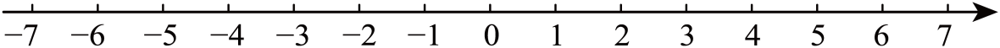
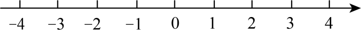
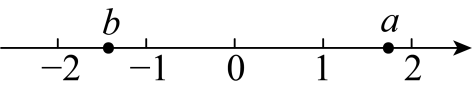
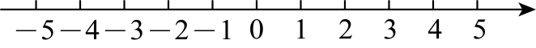
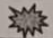

专题2.3 绝对值、有理数大小比较（举一反三讲义）
【北师大版2024】

【题型1 根据绝对值的代数意义求绝对值】 1
【题型2 根据绝对值的几何意义求绝对值】 2
【题型3 根据去绝对值法则化简绝对值】 2
【题型4 根据绝对值的非负性求值】 3
【题型5 解绝对值方程】 3
【题型6 绝对值的应用】 3
【题型7 有理数比较大小】 4
【题型8 有理数大小比较的实际应用】 5
 知识点1 绝对值
知识点1 绝对值
1. 定义：一般地，数轴上表示数a的点与原点的距离叫作数a的绝对值，记作a．
2. 绝对值的判断：一个正数的绝对值是它本身，一个负数的绝对值是它的相反数，0的绝对值是0．即如果a>0,那么a=a；如果a=0，那么a=0；如果a<0，那么a=−a．
3. 绝对值非负性的应用：根据绝对值的非负性“若几个非负数的和为0，则每一个非负数必为0”，即若a+b=0，则a=0且b=0．
知识点2 有理数的大小比较
利用数轴比较大小：在水平的数轴上表示有理数，它们从左到右的顺序，就是从小到大的顺序，即左边的数小于右边的数．
2. 利用有理数的分类比较大小：一般地，正数大于0，0大于负数，正数大于负数；两个负数，绝对值大的反而小．
3. 作差法:若两数分别为a，b，a−b>0，则a>b；若a−b<0，则a<b；若a−b=0，则a=b．
【题型1 根据绝对值的代数意义求绝对值】
【例1】（2025·安徽合肥·三模）−12025的相反数是（ ）
A．2025 B．−2025 C．12025 D．−12025
【变式1-1】（2024七年级上·全国·专题练习）绝对值是2026的有理数是 ．
【变式1-2】（23-24七年级上·山西太原·阶段练习）绝对值不大于4的所有负整数有 ．
【变式1-3】（24-25九年级下·江西抚州·阶段练习）在−2025，0， −π ，2026这四个数中，绝对值最小的数是（ ）
A．−2025 B．0 C．−π D．2026
【题型2 根据绝对值的几何意义求绝对值】
【例2】（24-25七年级上·湖北荆州·期末）知道式子x−3=3的几何意义是数轴上表示数x的点与表示数3的点之间的距离是3，则式子x−2+x+1的最小值（ ）
A．2 B．3 C．4 D．5
【变式2-1】（24-25六年级上·山东济南·期末）5−3可以理解为5与3两个数在数轴上所对应的两点之间的距离；5−−2可以表示5与−2两个数在数轴上所对应的两点之间的距离．则：a与b两个数在数轴上所对应的两点之间的距离可以表示为

【变式2-2】（24-25七年级上·北京·期中）若x−3=x−3成立，那么x的取值范围是 ．
【变式2-3】（23-24七年级上·贵州安顺·期末）由绝对值的几何意义，我们知道x表示数轴上某一点到原点的距离，同理可以得到x−3表示数轴上某一点到表示数3的点的距离，x+2表示数轴上某一点到表示数－2的点的距离．设S=x−1+x+1，结合数轴，则下面的结论中正确的是（ ）

A．S没有最小值 B．有有限个x（不止一个）使S取得最小值
C．只有一个x使S取得最小值 D．有无限个x使S取得最小值
【题型3 根据去绝对值法则化简绝对值】
【例3】（24-25九年级下·江苏南京·阶段练习）已知1<x<2，则x−3+x−2的值为 ．
【变式3-1】（24-25九年级下·重庆渝中·阶段练习）−1+∣π−2∣= ．
【变式3-2】（24-25七年级上·河南郑州·期中）已知a,b两数在数轴上的位置如图所示，则化简代数式|a+b|−|a−1|+|b+3|的结果是( )

A．1 B．2b+4 C．2a+3 D．−1
【变式3-3】（24-25七年级上·内蒙古包头·期末）在数轴上表示a，0，b三个数的点如图所示，已知OA=OB，则a+b+ab+2= ．
【题型4 根据绝对值的非负性求值】
【例4】（24-25七年级上·广西桂林·阶段练习）若x−2+2y−6=0，则y−x的值为（ ）
A．3 B．2 C．1 D．0
【变式4-1】（24-25七年级上·福建龙岩·期末）如果x为有理数，式子2025−x+4存在最大值，这个最大值是（ ）
A．2025 B．2024 C．2023 D．2022
【变式4-2】（23-24七年级上·浙江金华·阶段练习）若a+b=0，则a+b= ．
【变式4-3】（24-25八年级下·山东潍坊·阶段练习）若x+2=−x−2，则x的取值范围是（ ）
A．x≥−2 B．x<0 C．x≤−2 D．x<−2
【题型5 解绝对值方程】
【例5】（24-25七年级上·全国·单元测试）已知m=−6，则m的值可能是（ ）
A．−6 B．6 C．6或−6 D．无法确定
【变式5-1】（24-25六年级上·上海闵行·期中）已知一个数减去2.4的差的绝对值为0，那么这个数是 ．
【变式5-2】若x=2，则x= ．
【变式5-3】（24-25七年级上·辽宁鞍山·阶段练习）如果−a=−5，那么a= ．
【题型6 绝对值的应用】
【例6】（2025·山西运城·模拟预测）在工业生产中，AI大模型的引入，显著提升了工业产品的精密度．下面是某工厂四台接入AI大模型的机床生产的轴承的误差数据，其中精确度最高的是（ ）
A．+0.03mm B．−0.02mm C．+0.02mm D．−0.01mm
【变式6-1】（2025·河北邯郸·二模）为了解某种盒装茶叶的质量（单位：g）情况，质检员抽样监测了其中4盒茶叶．其中超标的记为正数，不足的记为负数．检验结果分别是+5，−0.6，−0.3，−1.8，其中最接近标准质量的是（ ）
A．+5 B．−0.6 C．−0.3 D．−1.8
【变式6-2】（24-25七年级上·河南省直辖县级单位·期末）党和国家非常重视青少年的身心健康，采取多种举措增强青少年体质，数据显示，近几年，青少年身体健康状况有一定提升，但肥胖问题仍不容忽视．一种少年儿童的标准体重(单位：kg)的计算公式为：标准体重=(年龄×7−5)÷2．如表是七年级某小组6位同学的体重情况，其中超出标准体重的千克数记为正数，少于标准体重的千克数记为负数，那么表中编号为 的同学的体重最符合标准体重．
编号 | 1 | 2 | 3 | 4 | 5 | 6 |
体重情况 | −1.1 | +2 | −0.4 | +9 | +1 | −9.3 |
【变式6-3】（24-25七年级上·甘肃张掖·阶段练习）有一种密码，把26个英文字母a、b、c、d、…、z（不论大小写），依次对应自然数1，2，3，4，…，26（见表格），当明码对应的序号x为奇数时，密码对应的序号是|x−25|2，当明码对应的序号x为偶数时，密码对应的序号是x2−3，按上述规定，把明码“tℎis”译成密码是 ．
字母 | a | b | c | d | e | f | g | h | i | j | k | l | m |
序号 | 1 | 2 | 3 | 4 | 5 | 6 | 7 | 8 | 9 | 10 | 11 | 12 | 13 |
字母 | n | o | p | q | r | s | t | u | v | w | x | y | z |
序号 | 14 | 15 | 16 | 17 | 18 | 19 | 20 | 21 | 22 | 23 | 24 | 25 | 26 |
【题型7 有理数比较大小】
【例7】（24-25七年级上·青海西宁·期中）在−1, −−2, 0, −−2.5, +3中，最小的数是（ ）
A．0 B．−−2.5 C．−1 D．−−2
【变式7-1】（2025·广东清远·二模）下列各数中，最小的数是（ ）
A．−2 B．13 C．1 D．−3
【变式7-2】（2025·江苏南京·一模）比较大小：−34 −712．（填“>”“<”或“=”号）
【变式7-3】（23-24七年级上·陕西榆林·阶段练习）在下面数轴上画出表示下列各数的点，比较这些数的大小，并用“<”号将所有的数按从小到大的顺序连接起来．
−4,−|−2.5|,−−312,−1,|+5|．

【题型8 有理数大小比较的实际应用】
【例8】（2025·江西·中考真题）在1个标准大气压下，四种晶体的熔点如下表所示，则熔点最高的是（ ）
晶体 | 固态氢 | 固态氧 | 固态氮 | 固态酒精 |
熔点（单位：°C） | −259 | −218 | −210 | −117 |
A．固态氢 B．固态氧 C．固态氮 D．固态酒精
【变式8-1】（24-25七年级上·广西南宁·期中）某工厂生产雨伞，每天标准生产量为200把，但由于各种原因，实际每天生产的量与标准产量相比有所不同，下表是这周的实际生产情况（超过每日标准产量的记作正数，不足每日标准产量的记作负数）：
星期 | 一 | 二 | 三 | 四 | 五 | 六 | 日 |
生产情况 | 8 | −5 | 12 | −13 | −9 | 14 | 7 |
(1)表中的−5表示什么？
(2)哪一天生产的雨伞数量最多？哪一天生产的雨伞数量最少？
(3)这周雨伞的总生产量是多少？
【变式8-2】（24-25七年级上·河北邯郸·期中）【新情境⋅生产生活】某校举办了“废纸回收，变废为宝”活动，各班收集的废纸均以5kg为标准，超过的记为“+”，不足的记为“－”．七年级六个班的废纸收集情况如下表所示．统计员小虎不小心将六班的数据弄丢了，但他记得三班收集的废纸最少，且收集废纸最多和最少的班级的质量差为4kg．
班级 | 一 | 二 | 三 | 四 | 五 | 六 |
质量/kg | +1 | +2 | −1.5 | 0 | −1 |
(1)计算七年级六班同学收集废纸的质量；
(2)将本次活动七年级六个班收集的废纸集中卖出，其中有3kg的硬纸板是1.2元/kg，其余废纸均是0.8元/kg，求卖废纸的总钱数．
【变式8-3】（24-25六年级上·山东烟台·期中）某海鲜超市每天要到小龙虾养殖基地购进500kg小龙虾，下表是该海鲜超市记录的本周小龙虾购进单价变化情况（正号表示价格比前一天上涨，负号表示价格比前一天下降）．
星期 | 一 | 二 | 三 | 四 | 五 | 六 | 日 |
单价变化/元 | −1 | +2.5 | −2 |  | −3 | +2 | +2 |
已知小龙虾上周末的进价为每千克23元，这周四的进价为每千克24元．
(1)请你求出表中星期四的单价变化值；
(2)这周购进小龙虾的最高价是每千克多少元？最低价是每千克多少元？
(3)若该海鲜超市本周五将购进的小龙虾以每千克25元全部售出，那么该海鲜超市在本周五的收益情况如何？